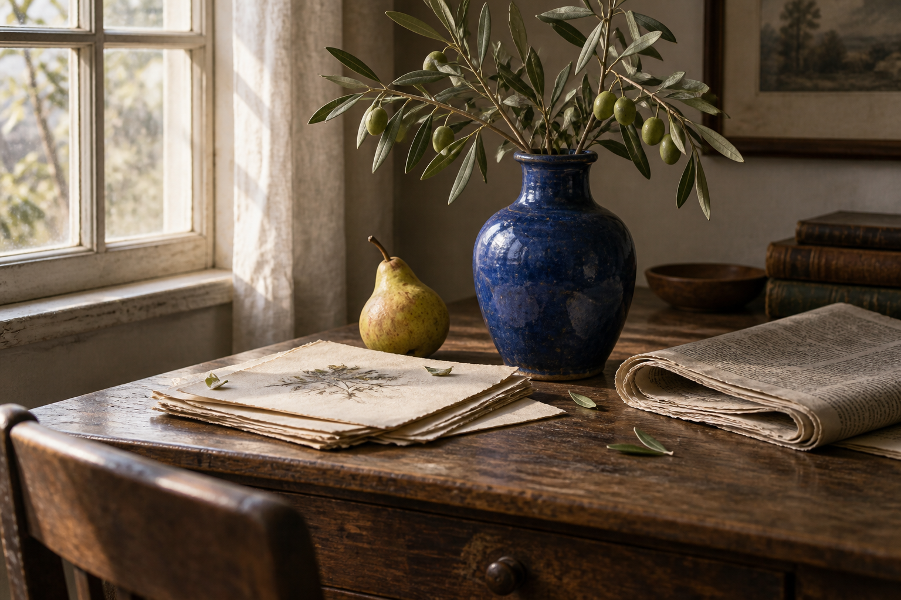
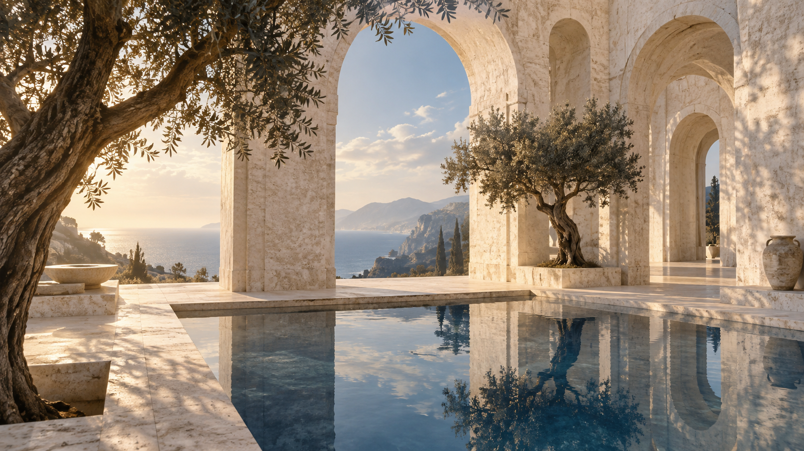
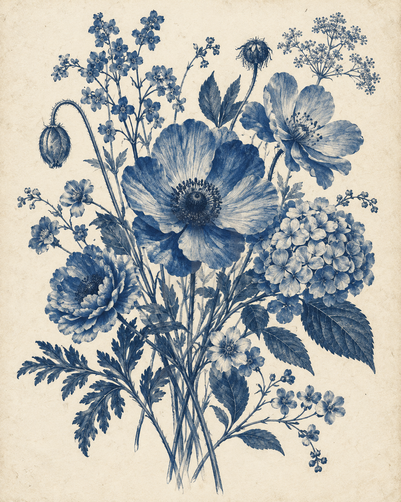

SCENE 01아침의 책상
종이 위로 스미는 빛. 가까운 사물에서 이야기가 시작된다.
한 장면에서 다음 장면으로, 이미지에 이야기를 더합니다.

SHORT FILM / CONCEPT 01The future, at a slower pace.
AI로 상상한 공간을 따라가며 일상의 속도를 잠시 늦추는 영상 기획입니다. 아래 스토리보드는 실제 영상 제작 전의 예시입니다.

SCENE 01종이 위로 스미는 빛. 가까운 사물에서 이야기가 시작된다.

SCENE 02푸른 잎의 선이 서서히 드러나며 상상의 정원으로 연결된다.
넓은 아치와 잔잔한 수면. 미래의 공간 안에서 호흡을 고른다.